End of Training Program Presentation
Welcome to the end of training program presentation for your children at the training center.
Assiduity
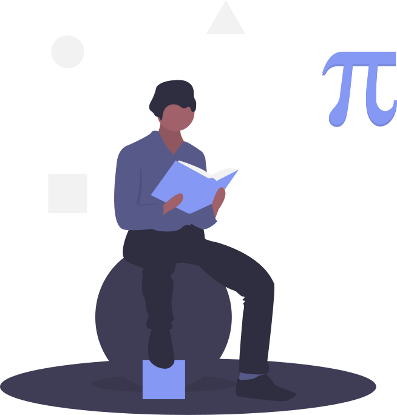No Record of unexcused absences
Participation in Classes
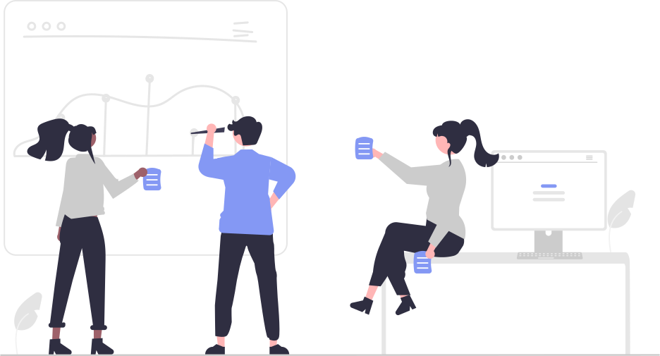Active involvement in discussions
Engaging with peers and instructors
Punctuality
Timely submission of assignments
Consistent arrival on time
Home Assiduity
Collaboration with parents
Regular check-ins with the colleague
Consistent study schedule at home
Work
Homework assignments
Group projects
Individual tasks
Projects Developed
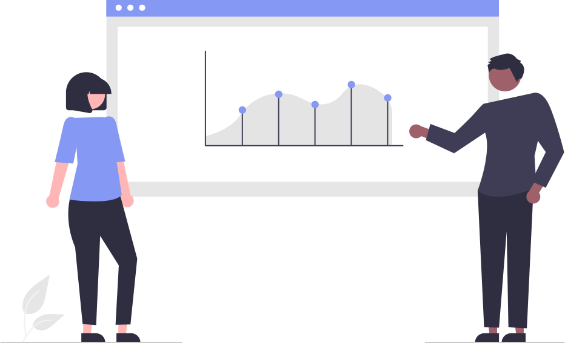Science fair projects
Research and exposes
Technology and coding projects
Extra-Curricular Activities
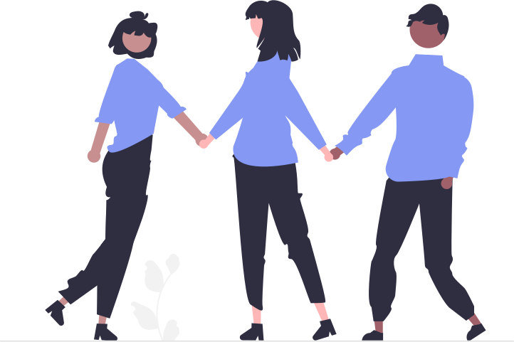Sports
Environmental conservation
Technology and innovation
Progress
Skills Improvement

Improved problem-solving abilities
Knowledge Gained
Understanding of core subjects
Exposure to new concepts and ideas
Behavioral Changes
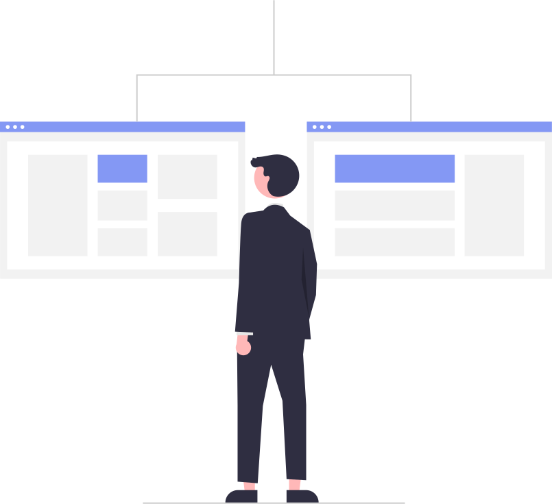Increased responsibility
Better teamwork and cooperation
Projects
Project Timeline
Management Tasks
Certifications
- LPIC System Admin
- Java Certified Oracle Fundamentals
- JavaScript OpenEDG Essential
- Stripe Professional Cert
- LPIC DevOps Tool Eng Cert
- ...
Certifications
LPIC 10X
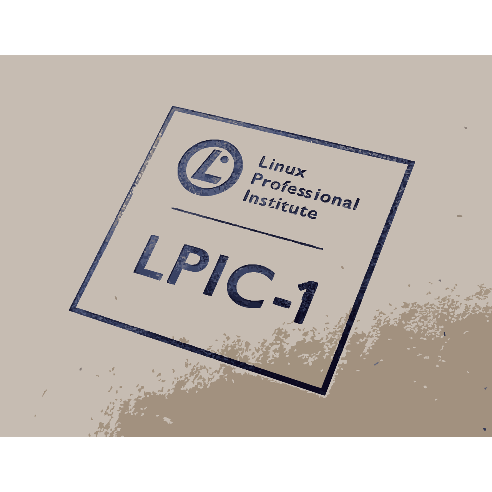Linux Professional Institute Certification
Mastery of Linux system administration
LPIC CertificationJavaScript
Fundamental and advanced JavaScript skills
Projects and applications developed using JavaScript
JavaScript CertificationJava
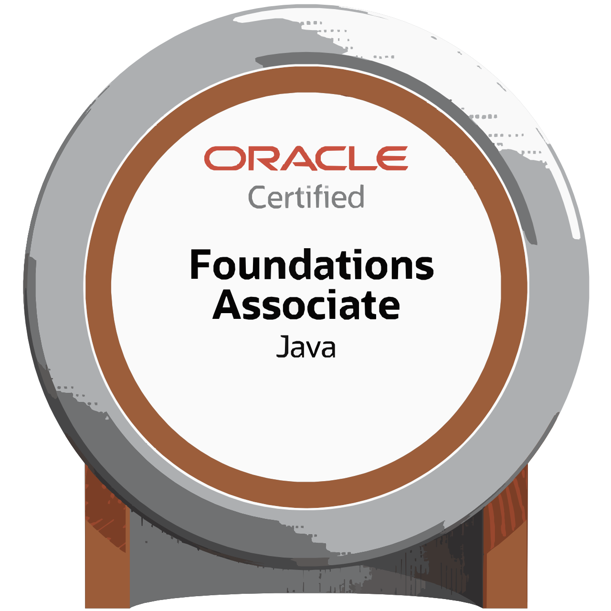Comprehensive understanding of Java programming
Building robust applications with Java
Java CertificationChallenges
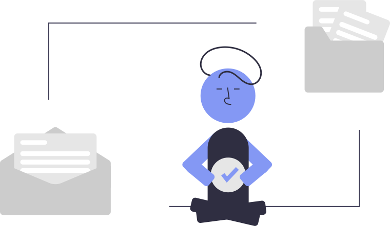Academic challenges
Environmental challenges
Social challenges
Solutions Found
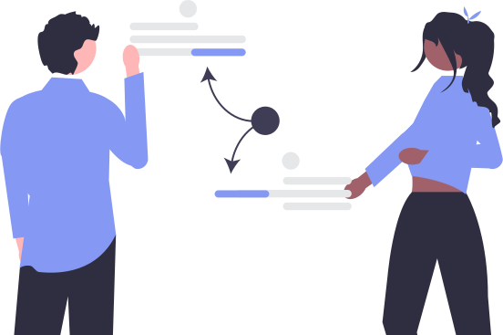- Different Student learning curve
- New city, new weather
- New people – new culture
- Arguing a lot?
Lessons Learned
- Perseverance and resilience
- Problem-solving techniques
- Personalized training for each
- ...
Future Steps
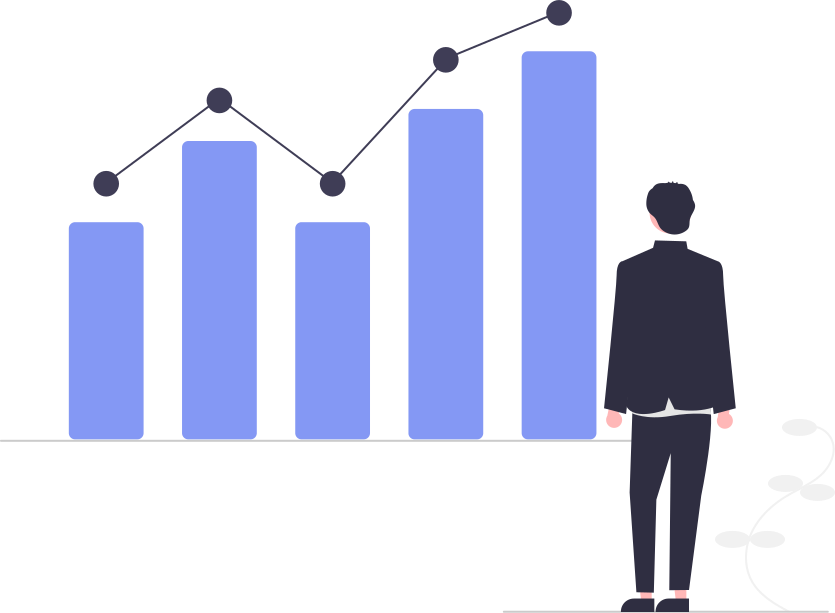Academic aspirations
Career ambitions
Areas for Improvement
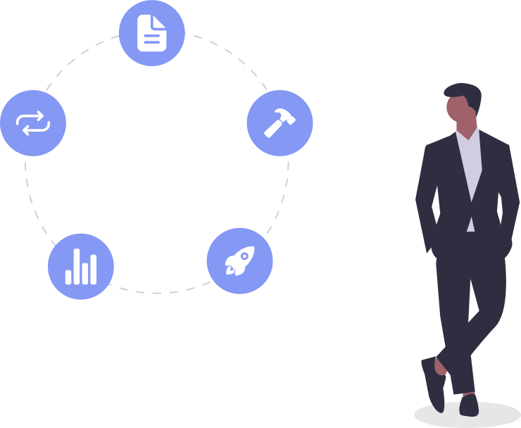Plans for Continuous Learning
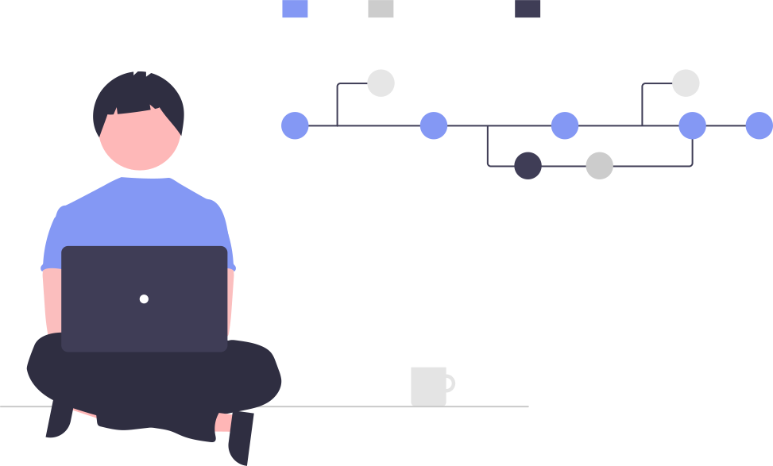Studying at UdM
Workshops at adorsys GmbH
Conclusion
Thank you!
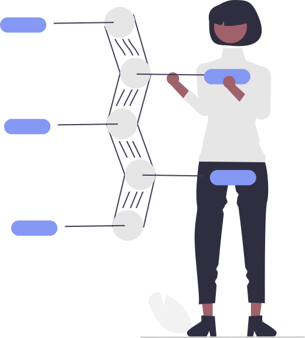Overview of the progress made
Highlights of memorable moments
Thank you!
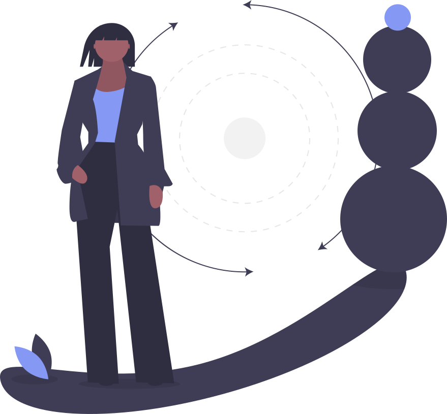Thank you for your attention. We are proud of each child's journey and look forward to their future successes.